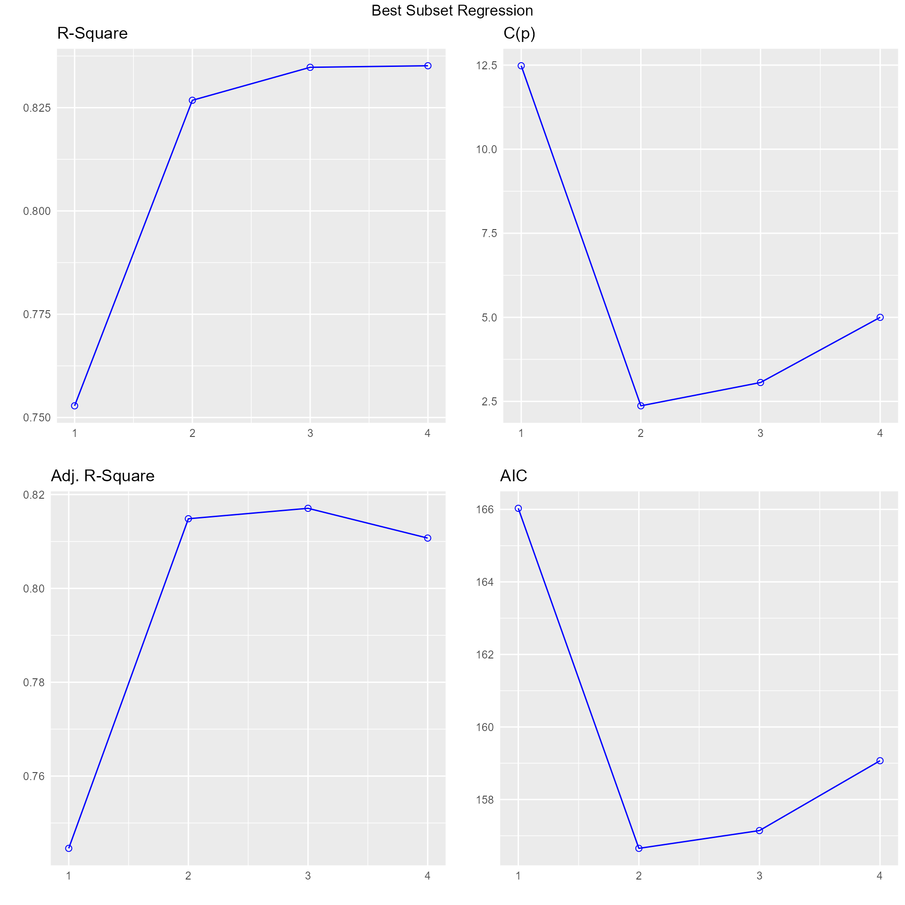
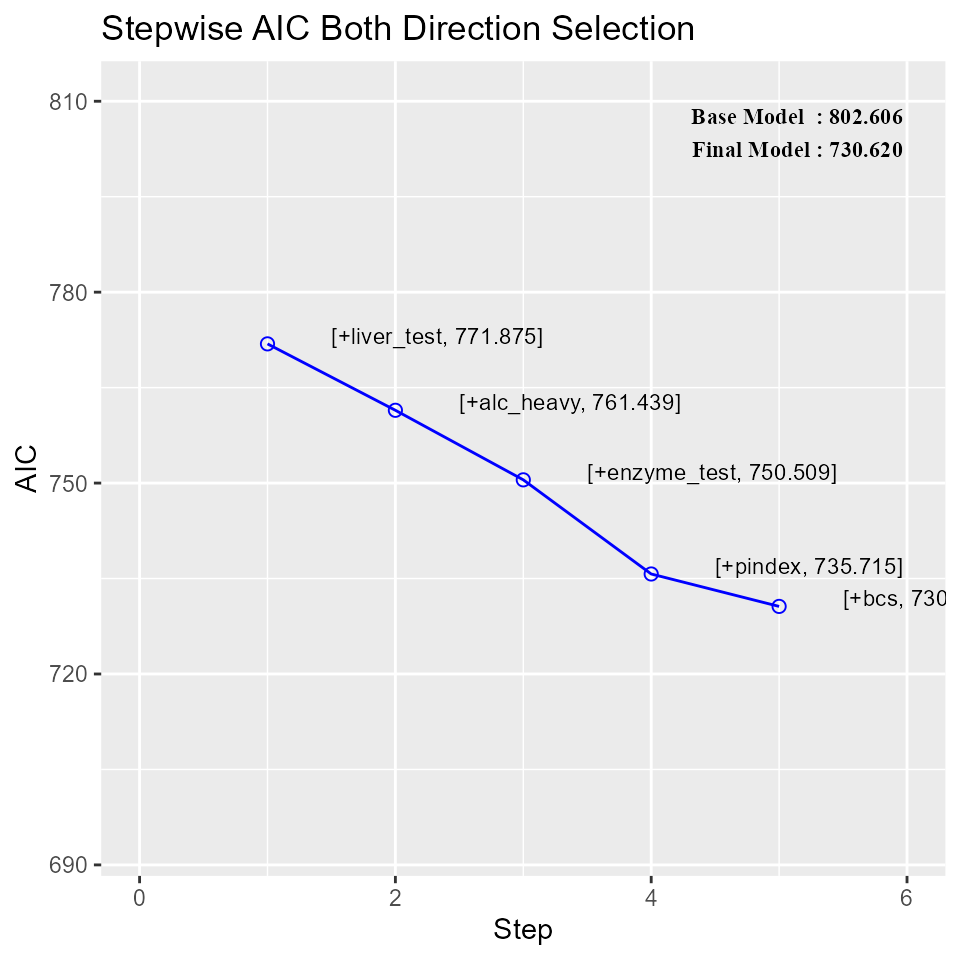

Variable Selection Methods
2017-02-28
Variable Selection Procedures
All Possible Regression
All subset regression tests all possible subsets of the set of potential independent variables. If there are K potential independent variables (besides the constant), then there are \(2^{k}\) distinct subsets of them to be tested. For example, if you have 10 candidate independent variables, the number of subsets to be tested is \(2^{10}\), which is 1024, and if you have 20 candidate variables, the number is \(2^{20}\), which is more than one million.
model <- lm(mpg ~ disp + hp + wt + qsec, data = mtcars)
ols_all_subset(model)## Index N Predictors R-Square Adj. R-Square Mallow's Cp
## 1 1 1 wt 0.753 0.745 12.4809
## 2 2 1 disp 0.718 0.709 18.1296
## 3 3 1 hp 0.602 0.589 37.1126
## 4 4 1 qsec 0.175 0.148 107.0696
## 5 5 2 hp wt 0.827 0.815 2.369
## 6 6 2 wt qsec 0.826 0.814 2.4295
## 7 7 2 disp wt 0.781 0.766 9.8791
## 8 8 2 disp hp 0.748 0.731 15.2331
## 9 9 2 disp qsec 0.722 0.702 19.6028
## 10 10 2 hp qsec 0.637 0.612 33.4722
## 11 11 3 hp wt qsec 0.835 0.817 3.0617
## 12 12 3 disp hp wt 0.827 0.808 4.3607
## 13 13 3 disp wt qsec 0.826 0.808 4.4293
## 14 14 3 disp hp qsec 0.754 0.728 16.2578
## 15 15 4 disp hp wt qsec 0.835 0.811 5The plot method shows the panel of fit criteria for all possible regression methods.
model <- lm(mpg ~ disp + hp + wt + qsec, data = mtcars)
k <- ols_all_subset(model)
plot(k)
Best Subset Regression
Select the subset of predictors that do the best at meeting some well-defined objective criterion, such as having the largest R2 value or the smallest MSE, Mallow’s Cp or AIC.
model <- lm(mpg ~ disp + hp + wt + qsec, data = mtcars)
ols_best_subset(model)## Best Subsets Regression
## ------------------------------
## Model Index Predictors
## ------------------------------
## 1 wt
## 2 hp wt
## 3 hp wt qsec
## 4 disp hp wt qsec
## ------------------------------
##
## Subsets Regression Summary
## -------------------------------------------------------------------------------------------------------------------------------
## Adj. Pred
## Model R-Square R-Square R-Square C(p) AIC SBIC SBC GMSEP Jp Sp PC
## -------------------------------------------------------------------------------------------------------------------------------
## 1 0.7530 0.7450 0.7087 12.4809 166.0294 74.2916 170.4266 9.8972 9.8572 0.3199 0.2801
## 2 0.8270 0.8150 0.7811 2.3690 156.6523 66.5755 162.5153 7.4314 7.3563 0.2402 0.2090
## 3 0.8350 0.8170 0.782 3.0617 157.1426 67.7238 164.4713 7.6140 7.4756 0.2461 0.2124
## 4 0.8350 0.8110 0.771 5.0000 159.0696 70.0408 167.8640 8.1810 7.9497 0.2644 0.2259
## -------------------------------------------------------------------------------------------------------------------------------The plot method shows the panel of fit criteria for best subset regression methods.
model <- lm(mpg ~ disp + hp + wt + qsec, data = mtcars)
k <- ols_best_subset(model)
plot(k)
Stepwise Forward Regression
Build regression model from a set of candidate predictor variables by entering predictors based on p values, in a stepwise manner until there is no variable left to enter any more.
Variable Selection
# stepwise forward regression
model <- lm(y ~ ., data = surgical)
ols_step_forward(model)## We are selecting variables based on p value...## 1 variable(s) added....## 1 variable(s) added...
## 1 variable(s) added...
## 1 variable(s) added...
## 1 variable(s) added...## No more variables satisfy the condition of penter: 0.3## Forward Selection Method
##
## Candidate Terms:
##
## 1 . bcs
## 2 . pindex
## 3 . enzyme_test
## 4 . liver_test
## 5 . age
## 6 . gender
## 7 . alc_mod
## 8 . alc_heavy
##
## ------------------------------------------------------------------------------
## Selection Summary
## ------------------------------------------------------------------------------
## Variable Adj.
## Step Entered R-Square R-Square C(p) AIC RMSE
## ------------------------------------------------------------------------------
## 1 liver_test 0.455 0.444 62.5119 771.8753 296.2992
## 2 alc_heavy 0.567 0.550 41.3681 761.4394 266.6484
## 3 enzyme_test 0.659 0.639 24.3379 750.5089 238.9145
## 4 pindex 0.750 0.730 7.5373 735.7146 206.5835
## 5 bcs 0.781 0.758 3.1925 730.6204 195.4544
## ------------------------------------------------------------------------------Plot
model <- lm(y ~ ., data = surgical)
k <- ols_step_forward(model)## We are selecting variables based on p value...## 1 variable(s) added....## 1 variable(s) added...
## 1 variable(s) added...
## 1 variable(s) added...
## 1 variable(s) added...## No more variables satisfy the condition of penter: 0.3plot(k)Stepwise Backward Regression
Build regression model from a set of candidate predictor variables by removing predictors based on p values, in a stepwise manner until there is no variable left to remove any more.
Variable Selection
# stepwise backward regression
model <- lm(y ~ ., data = surgical)
ols_step_backward(model)## We are eliminating variables based on p value...## No more variables satisfy the condition of prem: 0.3## Backward Elimination Method
##
## Candidate Terms:
##
## 1 . bcs
## 2 . pindex
## 3 . enzyme_test
## 4 . liver_test
## 5 . age
## 6 . gender
## 7 . alc_mod
## 8 . alc_heavy
##
## --------------------------------------------------------------------------
## Elimination Summary
## --------------------------------------------------------------------------
## Variable Adj.
## Step Removed R-Square R-Square C(p) AIC RMSE
## --------------------------------------------------------------------------
## 1 alc_mod 0.782 0.749 7.0141 734.4068 199.2637
## 2 gender 0.781 0.754 5.0870 732.4942 197.2921
## 3 age 0.781 0.758 3.1925 730.6204 195.4544
## --------------------------------------------------------------------------Plot
model <- lm(y ~ ., data = surgical)
k <- ols_step_backward(model)## We are eliminating variables based on p value...## No more variables satisfy the condition of prem: 0.3plot(k)
Stepwise Regression
Build regression model from a set of candidate predictor variables by entering and removing predictors based on p values, in a stepwise manner until there is no variable left to enter or remove any more.
Variable Selection
# stepwise regression
model <- lm(y ~ ., data = surgical)
ols_stepwise(model)## We are selecting variables based on p value...## 1 variable(s) added....## 1 variable(s) added...
## 1 variable(s) added...
## 1 variable(s) added...
## 1 variable(s) added...## No more variables to be added or removed.## Stepwise Selection Method
##
## Candidate Terms:
##
## 1 . bcs
## 2 . pindex
## 3 . enzyme_test
## 4 . liver_test
## 5 . age
## 6 . gender
## 7 . alc_mod
## 8 . alc_heavy
##
## ------------------------------------------------------------------------------------------
## Stepwise Selection Summary
## ------------------------------------------------------------------------------------------
## Added/ Adj.
## Step Variable Removed R-Square R-Square C(p) AIC RMSE
## ------------------------------------------------------------------------------------------
## 1 liver_test addition 0.455 0.444 62.5119 771.8753 296.2992
## 2 alc_heavy addition 0.567 0.550 41.3681 761.4394 266.6484
## 3 enzyme_test addition 0.659 0.639 24.3379 750.5089 238.9145
## 4 pindex addition 0.750 0.730 7.5373 735.7146 206.5835
## 5 bcs addition 0.781 0.758 3.1925 730.6204 195.4544
## ------------------------------------------------------------------------------------------Plot
model <- lm(y ~ ., data = surgical)
k <- ols_stepwise(model)## We are selecting variables based on p value...## 1 variable(s) added....## 1 variable(s) added...
## 1 variable(s) added...
## 1 variable(s) added...
## 1 variable(s) added...## No more variables to be added or removed.plot(k)
Stepwise AIC Forward Regression
Build regression model from a set of candidate predictor variables by entering predictors based on Akaike Information Criteria, in a stepwise manner until there is no variable left to enter any more.
Variable Selection
# stepwise aic forward regression
model <- lm(y ~ ., data = surgical)
ols_stepaic_forward(model)## ---------------------------------------------------------------------------
## Variable AIC Sum Sq RSS R-Sq Adj. R-Sq
## ---------------------------------------------------------------------------
## liver_test 771.8753 3804272.477 4565248.06 0.455 0.444
## alc_heavy 761.4394 4743349.776 3626170.761 0.567 0.55
## enzyme_test 750.5089 5515514.136 2854006.401 0.659 0.639
## pindex 735.7146 6278360.06 2091160.477 0.75 0.73
## bcs 730.6204 6535804.09 1833716.447 0.781 0.758
## ---------------------------------------------------------------------------
Stepwise AIC Backward Regression
Build regression model from a set of candidate predictor variables by removing predictors based on Akaike Information Criteria, in a stepwise manner until there is no variable left to remove any more.
Variable Selection
# stepwise aic backward regression
model <- lm(y ~ ., data = surgical)
k <- ols_stepaic_backward(model)
k##
##
## Backward Elimination Summary
## -------------------------------------------------------------------------
## Variable AIC RSS Sum Sq R-Sq Adj. R-Sq
## -------------------------------------------------------------------------
## Full Model 736.39 1825905.713 6543614.824 0.782 0.743
## alc_mod 734.407 1826477.828 6543042.709 0.782 0.749
## gender 732.494 1829435.617 6540084.92 0.781 0.754
## age 730.62 1833716.447 6535804.09 0.781 0.758
## -------------------------------------------------------------------------### Plotmodel <- lm(y ~ ., data = surgical)
k <- ols_stepaic_backward(model)
plot(k)
Stepwise AIC Regression
Build regression model from a set of candidate predictor variables by entering and removing predictors based on Akaike Information Criteria, in a stepwise manner until there is no variable left to enter or remove any more.
Variable Selection
# stepwise aic backward regression
model <- lm(y ~ ., data = surgical)
ols_stepaic_both(model)## No more variables to be added or removed.##
##
## Stepwise Summary
## --------------------------------------------------------------------------------------
## Variable Method AIC RSS Sum Sq R-Sq Adj. R-Sq
## --------------------------------------------------------------------------------------
## liver_test addition 771.875 4565248.06 3804272.477 0.455 0.444
## alc_heavy addition 761.439 3626170.761 4743349.776 0.567 0.55
## enzyme_test addition 750.509 2854006.401 5515514.136 0.659 0.639
## pindex addition 735.715 2091160.477 6278360.06 0.75 0.73
## bcs addition 730.62 1833716.447 6535804.09 0.781 0.758
## --------------------------------------------------------------------------------------Plot
model <- lm(y ~ ., data = surgical)
k <- ols_stepaic_both(model)## No more variables to be added or removed.plot(k)